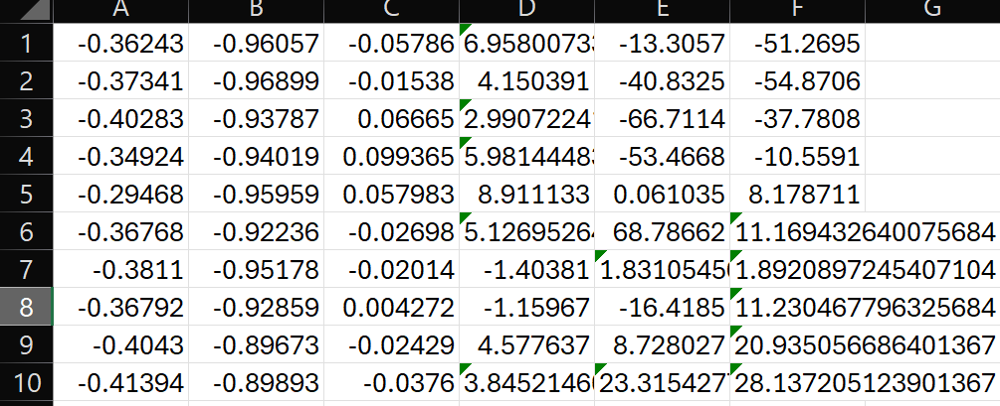
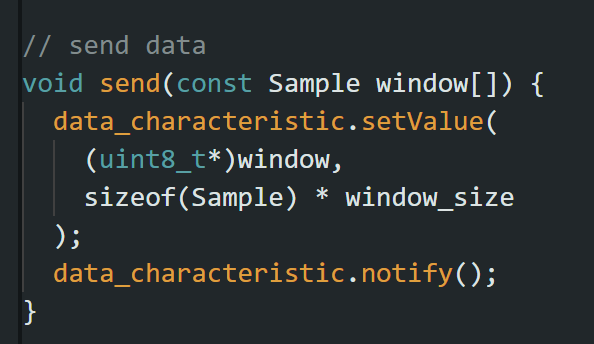
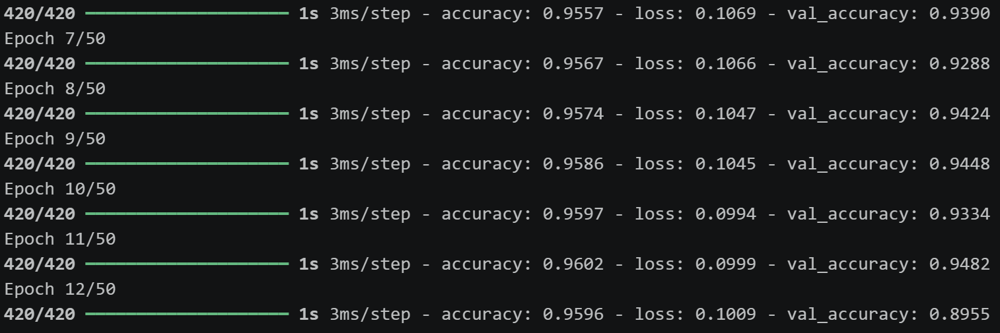

DEP Final Project

Fall detection using neural networks
Utilising a sensor based system to detect worker falls and alert nearby users.
Open Github Repository
The Problem
Given a complex workplace environment, construction workers may slip and fall occasionally. While accidents may occur, sometimes it is due to the facility while may be dismissed.
The Solution
To reduce the number of falls, detection and monitoring of worker falls are used to figure out if the number of falls are abnormal, and if a fall occurs, other workers are able to assist the one that fell.
Data

My team collected Acceleration and Gyroscopic Data at 50 Hz with the Nesso N1 to train the model
Preprocessing

Sending the Data over Bluetooth Low Energy (BLE) with packets of 5 readings to a local computer.
Model

Using a 1 Dimension Convolution Neural Network, with packets of 4 seconds with 50% overlap, the model is able to make a 3 state classification prediction confidence in which the highest confidence value is chosen as the state.
Implementation
Workers will strap a small black box onto their safety vests which track their movement patterns to determine a fall. An alert would also result in a buzz and a screen flash if a worker nearby fell.
Results Achieved
{
"what_worked" : [
"Nesso N1 was able to transmit data to the local computer",
"1D CNN neural network runs with a close to 95% accuracy",
"Data successfully stored in Supabase",
"Data can be visualised on a dashboard"
],
"what_did_not_work" : [
"1D CNN neural network fails to scan for near-miss",
"No handling of connection lost in BLE"
],
"knowledge_learnt" : [
"Neural Networks",
"Data Pipelines",
"Software Architecture"
]
}
Let's go back
< Back